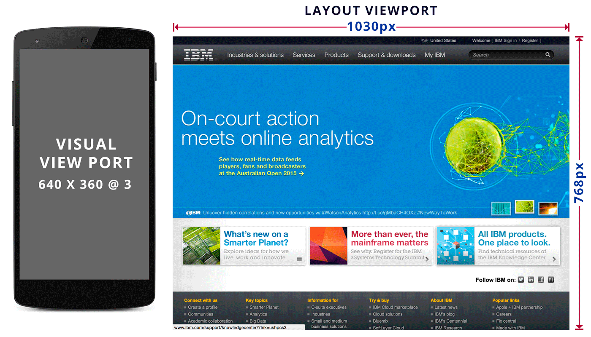

Front-end Fundamentals
Responsive web design
01 Pixels
CSS Pixels
CSS pixels are the ones we use in declations such as width, height, padding etc. They are an abstract construct. Their size increases or decreases when the user zooms.
Device Pixels
Device pixels are the physical pixels on the device, these are fixed but vary depends on the device.
CSS vs Device Pixels
on Retina devices
02 Resolution
Units
The resolution CSS data types, used in media queries, denotes the density of pixels of an output device, its resolution. It is a number immediately followed by a unit of resolution
03 Viewport
Viewport
The <html> element's width is calculated relative to the viewport, also called as initial containing block. on desktop it's equal to the browser window width.
By default, the viewport is 768 -1024px wide(depening on the browser), with 980px the most common size. we call this "layout viewport".
Responsive design is the art of overriding default width of the layout viewport.
Viewport
But the "layout viewport" is much wider than the mobile screen, thus we need a separate viewport for the actual window width, which we call "Visual Viewport".
Visual Representation
How browsers render
Meta Viewport
In order to create a RWD page we must set the layout viewport dimensions to the visual viewport dimentions
<meta name="viewport" content="width=device-width">
Meta Viewport Properties
The recognized properties in the viewport META element are:
- width
- height
- initial-scale
- minimum-scale
- maximum-scale
- user-scalable
Meta Viewport Syntax
In order to create a RWD page we must set the layout viewport dimensions to the visual viewport dimentions
<meta name="viewport" content="width=device-width, initial-scale=1.0, maximum-scale=1.0, user-scalable=no">
Set Viewport using CSS
The meta viewport element is non-normative, that is, it isn't actually a standard. It was first implemented by Apple for the iPhone and quickly adopted by other platforms. The @viewport rule, however, is in the process of being standardized by the W3C.
@viewport {
width: device-width;
zoom: 1;
min-zoom: 0.25;
max-zoom: 5;
user-zoom: zoom;
orientation: landscape;
}
04 What is AWD?
Adaptive Web Design
AWD is a high level design philosophy that can be achieved through a variety of execution tactics including server side user agent detection, or client side responsive web design. Using a predefined set of layout sizes based on device screen size along with CSS and JavaScript, the AWD approach adapts to the detected device. Since we're targeting multiple common viewport resolutions, going from one to the other when resizing the window may cause the layout to jump.
Aaron Gustafson05 What is RWD?
Responsive Web Design
Responsive Web design is the approach that suggests that design and development should respond to the user's behavior and environment based on screen size, platform and orientation.
Ethan MarcotteWhy it is important?
"Day by day, the number of devices, platforms, and browsers that need to work with your site grows. Responsive web design represents a fundamental shift in how we'll build websites for the decade to come."
RWD components
Responsive web design is broken down into three main components
Flexible layouts
It is the practice of building the layout of a website with a flexible grid, capable of dynamically resizing to any width. Flexible grids are built using relative length units, most commonly percentages. These relative lengths are then used to declare common grid property values such as width, margin, or padding.
Formula for creating grids
The formula is based around taking the target width of an element and dividing it by the width of it's parent element. The result is the relative width of the target element.
target ÷ context x 100 = result %
Media queries
Media queries were built as an extension to media types commonly found when targeting and including styles. Media queries provide the ability to specify different styles for individual browser and device circumstances, the width of the viewport or device orientation for example. Being able to apply uniquely targeted styles opens up a world of opportunity and leverage to responsive web design.
Initializing Media Queries
There are a couple different ways to use media queries, using the @media rule inside of an existing style sheet, importing a new style sheet using the @import rule, or by linking to a separate style sheet from within the HTML document. Generally speaking it is recommend to use the @media rule inside of an existing style sheet to avoid any additional HTTP requests.
Using HTML Media Attribute
<link href="mobile.css" rel="stylesheet" media="all and (max-width: 640px)">
<link href="tablet.css" rel="stylesheet" media="all and (min-width: 641px) and (max-width: 1024px)">
<link href="desktop.css" rel="stylesheet" media="all and (min-width: 1025px)">
Using CSS @media
@media screen and (min-width: 320px) {...};
@media screen and (min-width: 640px) {...};
@media screen and (min-width: 1020px) {...};
min-width vs min-device-width
It is also possible to create queries based on *-device-width; though this practice is strongly discouraged. The difference is subtle but very important: min-width is based on the size of the browser window, whereas min-device-width is based on the size of the screen. Unfortunately some browsers, including the legacy Android browser may not report the device width properly and instead report the screen size in device pixels instead of the expected viewport width.
In addition, using *-device-width can prevent content from adapting on desktops or other devices that allow windows to be resized because the query is based on the actual device size, not the size of the browser window.
Some more Examples
@media only screen and (max-width : 320px) {...};
@media only screen and (min-device-width : 768px){...};
@media only screen and (orientation : landscape){...};
@media only screen and (orientation : portrait){...};
Target retina devices
@media
only screen and (-webkit-min-device-pixel-ratio: 2),
only screen and ( min--moz-device-pixel-ratio: 2),
only screen and ( -o-min-device-pixel-ratio: 2/1),
only screen and ( min-device-pixel-ratio: 2),
only screen and ( min-resolution: 192dpi),
only screen and ( min-resolution: 2dppx) {
/* Retina-specific stuff here */
}
Flexible Media
The final, equally important aspect to responsive web design involves flexible media. As viewports begin to change size media doesn’t always follow suit. Images, videos, and other media types need to be scalable, changing their size as the size of the viewport changes.
Flexible Media
One quick way to make media scalable is by using the max-width property with a value of 100%. Doing so ensures that as the viewport gets smaller any media will scale down according to its containers width.
img, video, canvas {
max-width: 100%;
}
06 Mobile First
Approach
One popular technique with using media queries is called mobile first. This includes using styles targeted at smaller viewports as the default styles for a website, then use media queries to add styles as the viewport grows.
The operating belief
A user on a mobile device, commonly using a smaller viewport, should’t have to load the styles for a desktop computer only to have them over written with mobile styles later. Doing so is a waste of bandwidth. Bandwidth that is precious to any users looking for a snappy website.
07 GRACEFUL DEGRADATION
Approach
Graceful degradation focuses on building the website for the most advanced/capable browsers. Under this paradigm, older browsers are expected to have a poor, but passable experience.
Small fixes may be made to accommodate a particular browser. Because they are not the focus, little attention is paid beyond fixing the most egregious errors.
07 PROGRESSIVE ENHANCEMENT
Approach
Progressive enhancement focuses on the content, irrespective of what browser it is.
Content is the reason we create websites to begin with. Some sites disseminate it, some collect it, some request it, some manipulate it, and some even do all of the above, but they all require it. That's what makes progressive enhancement a more appropriate paradigm.
How does it work?
Getting into the progressive enhancement mindset is quite simple: just think from the content out. The content forms the solid base on which you layer your style and interactivity.
M&M analogy

Start with your content (peanut), marked up in semantic HTML(structure). Coat that content with a layer of rich, creamy CSS(presentation). Finally, add JavaScript(behavior) as the hard candy shell to make a wonderfully tasty treat.